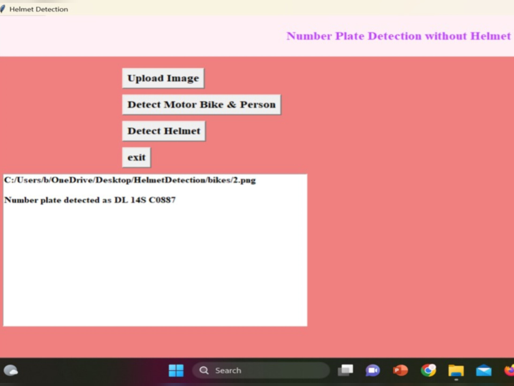

Skills
Web Technology
- HTML
- CSS
- JavaScript
Backend
- Java
Database
- SQL
Detection of Non-Helmet Riders and License Plate Extraction Using YOLOv2 and OCR


This project aims to enhance road safety by detecting riders without helmets using advanced YOLOv2 and OCR techniques. Key features include:
- Real-time detection of non-helmet riders.
- Automatic extraction and display of license plate numbers.
- Supports traffic police in enforcing helmet laws effectively.
- Aims to reduce fatalities by promoting helmet use among young riders.
- Contributes to safer roads and public awareness.